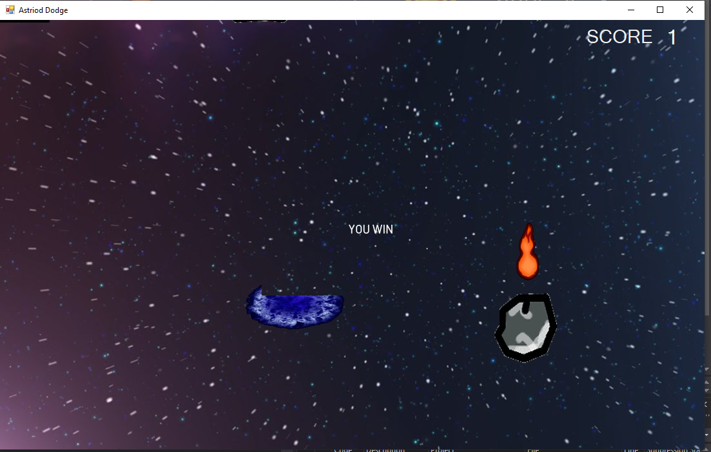
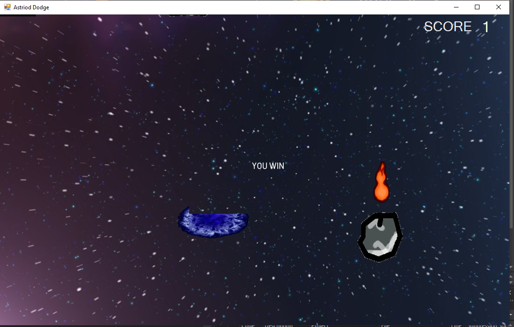

Asteroid Dodge! -- --------
--------
 


 Asteroid Dodge consists of a spaceship, asteroids, and a final end portal. The game’s main objective is to dodge all the asteroids, until you reach the portal that saves you from the situation.
You can use one laser bullet to destroy any of the asteroids, and when you reach the portal at the end of the game it displays a “You Win!” text. If you hit an asteroid it displays a “You Lose!” text, and the game ends.
There is also a score system implemented, if you reach the end portal it adds one point to the scoreboard.
Asteroid Dodge consists of a spaceship, asteroids, and a final end portal. The game’s main objective is to dodge all the asteroids, until you reach the portal that saves you from the situation.
You can use one laser bullet to destroy any of the asteroids, and when you reach the portal at the end of the game it displays a “You Win!” text. If you hit an asteroid it displays a “You Lose!” text, and the game ends.
There is also a score system implemented, if you reach the end portal it adds one point to the scoreboard.